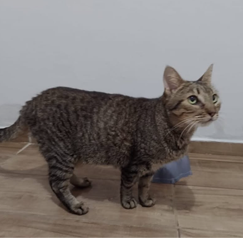
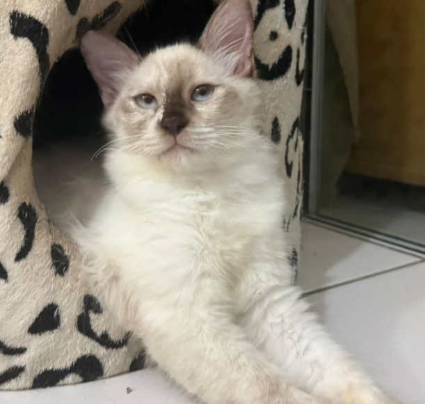
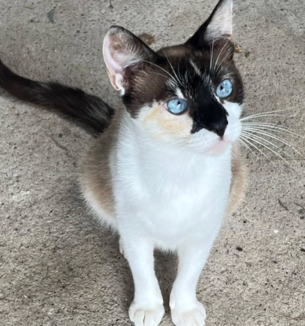

Essa lindinha da foto é a Minerva 💛
Uma gatinha cheia de charme, olhar curioso e pronta pra encontrar um lar de verdade.
✔️ Castrada
✔️ Microchipada
✔️ Saudável e pronta pra adoção
A Minerva merece segurança e cuidado, por isso só será doada para ambiente totalmente telado 🏡🐾Ela é daquelas companheiras que vão transformar sua casa em lar, com presença, carinho e aquele jeitinho único de gato que conquista aos poucos… e quando conquista, é pra sempre.

Kakashi a gatinha mais amada da vila está a procura de um lar para chamar de seu ✨
Sabe aquele gatinha super inteligente, sapeca e carinhosa? Essa é a nossa Kakashi ✨✨✨✨
Ela tem 4 meses, Fiv/Felv negativo, antipulgas e vermífugo em dia, e nós garantimos a castração!!
⚠️ Apenas para ambientes telados e sem acesso à rua ⚠️

Jade ainda tem esperança de encontrar sua família para chamar de sua, já sofreu muito com abandono e seu antigo tutor deu fim em todos os seus filhotes, deixando ela desesperada, ela adotou outros filhotes que não eram dela com todo amor . Foi castrada, negativa para filv e felv, extremamente dócil, se adapta muito bem com outros gatinhos .
⚠️ SOMENTE PARA AMBIENTES TELADOS SEM ACESSO A RUA ⚠️